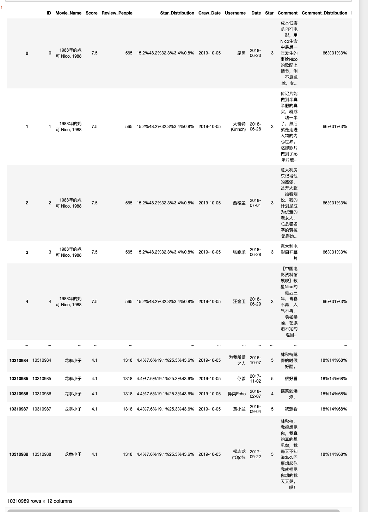
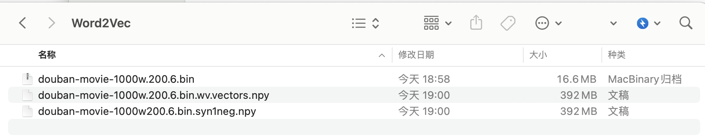
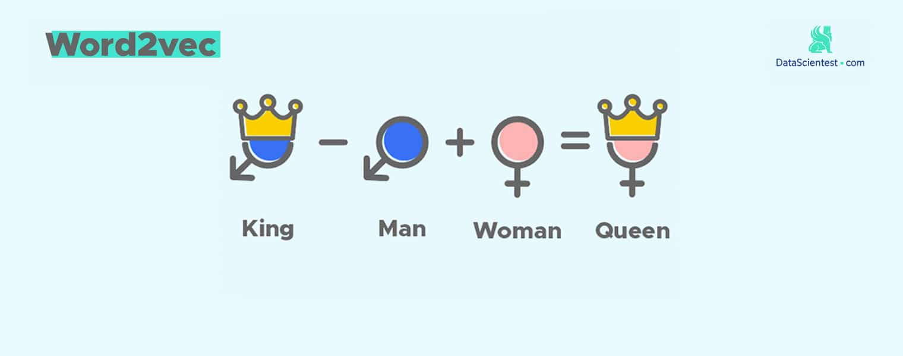

本文内容
- 介绍豆瓣影评数据集
- 构造语料训练Word2Vec模型
- 获取数据&cntext&Word2Vec模型文件
一、豆瓣影评数据集
1.1 数据集介绍
数据集: douba-movie-1000w
数据源: 豆瓣电影
记录数:
- 电影 10269 部
- 影评 10310989 条
体积: 1.35G
该数据集正好弥补下国内公开电影数据集的空缺， 数据已经过初步清洗，可用于推荐系统、情感分析、知识图谱、新闻传播学、社会学文化变迁等多个领域(或主题)。
1.2 读取数据
下载 douba-movie-1000w.zip 解压后，可以看到数据集中有一个 all_movies_with_id.csv 文件。
import pandas as pd
df = pd.read_csv('all_movies_with_id.csv')
df

1.3 所含字段
for col in df.columns:
print(f' - {col}')
Run
- ID
- Movie_Name 电影名
- Score 豆瓣电影评分(1-10)
- Review_People 评论者人数
- Star_Distribution 评论评分分布(1-5, 含多个数值，数值以%间隔)
- Craw_Date 爬虫运行日期
- Username 豆瓣评论者用户名
- Date 影评日期
- Star 影评评分(1-5)
- Comment 影评内容
- Comment_Distribution 影评评分分布
- Like 影评获得的喜欢数
二、 构造语料&训练Word2Vec
2.1 构造语料
将字段 Comment 中所有文本汇总到 douban-movie-1000w.txt,
with open('douban-movie-1000w.txt', 'w', encoding='utf-8') as f:
text = ''.join(df['Comment'].values)
f.write(text)
2.2 配置cntext2.1.1
将 cntext-2.1.1-py3-none-any.whl 放置于桌面，打开 cmd (苹果电脑打开terminal)， 输入cd desktop
cd desktop
之后在 cmd (苹果电脑打开terminal) 中使用 pip3 安装
pip3 install distinctiveness
pip3 install cntext-2.1.1-py3-none-any.whl
文末有 cntext-2.1.1-py3-none-any.whl 获取方式
2.3 训练Word2Vec
#cntext为2.1.1
import cntext as ct
w2v_model = ct.W2VModel(corpus_file='douban-movie-1000w.txt',
lang='chinese')
w2v_model.train(vector_size=200, window_size=6)
Run
Starting Preprocessing Corpus ...
Starting Training! This may take a while.Please be patient...
Traning word2vec model took 3965 seconds
Note: The Word2Vec model hase saved to output/Word2Vec

经过大概一个小时的训练， 得到模型文件 douban-movie-1000w.200.6.bin 及相关文件， 注意不要删掉哦。 已训练好的模型，可以自己用， 也可分享给其他人使用。
四、使用Word2Vec
4.1 导入Word2Vec模型文件
import cntext as ct
#导入模型，请注意路径。
# 【当前代码】 与 【Word2Vec文件夹】 同处于一个文件夹内
dm_w2v = ct.load_w2v('Word2Vec/douban-movie-1000w.200.6.bin')
dm_w2v
Run
Loading word2vec model...
<gensim.models.word2vec.Word2Vec at 0x10cb02090>
4.2 常用函数
-
dm_w2v.wv.get_vector(key) 获取key的词向量
-
dm_w2v.most_similar_to_given(key1, keys_list) 从 keys_list 中获取与 key1 最相似的词
-
dm_w2v.n_similarity(ws1, ws2) 两组词ws1, ws2 的相似度
-
dm_w2v.closer_than(key1, key2) 更接近于key1的词向量(相比于key2)
-
dm_w2v.most_similar(positive, negative) 找出与positive同方向，与negative反向相反的词。
4.2.1 get_vector(key)
使用词向量查看某
dm_w2v.wv.get_vector('给力')
Run
array([-3.55084002e-01, -1.22685611e+00, -8.48365605e-01, 1.23056602e+00,
1.35057056e+00, 1.65976137e-02, -1.26512849e+00, 1.47152972e+00,
9.99028236e-03, -1.00873756e+00, 1.05153358e+00, -1.39181948e+00,
6.02373898e-01, -1.00308895e+00, 2.33978868e-01, -1.83010173e+00,
-9.67333555e-01, 3.04877937e-01, -6.59058094e-01, 3.19660306e+00,
-1.21165246e-01, -3.68000716e-01, -2.36653373e-01, -6.83727741e-01,
......
......
-1.23901594e+00, 5.07202707e-02, 8.75848413e-01, -4.31963325e-01,
1.31377324e-01, -1.19606090e+00, 1.68391216e+00, -6.27069890e-01,
-7.37121344e-01, 2.49946609e-01, 1.47220814e+00, -1.33507824e+00,
2.97913142e-02, -4.91593599e-01, 5.83192170e-01, -8.48378658e-01,
-3.30877733e+00, 2.17747837e-01, 2.22701088e-01, -1.00758147e+00,
3.41430195e-02, -7.27023900e-01, -7.94953525e-01, -1.03226733e+00,
-4.55965906e-01, 1.66779244e+00, 1.16857982e+00, -1.02211344e+00,
4.11061406e-01, 8.95921767e-01, -9.48565483e-01, -1.48802996e-01,
9.36261594e-01, 3.98367733e-01, 3.12385857e-01, -8.67059827e-01],
dtype=float32)
4.2.2 most_similar_to_given(key1, keys_list)
从 keys_list 中获取与 key1 最相似的词。例如在 1000w 影评中，从'爱情', '悬疑', '飞船', '历史', '战争'找出最接近'太空'，最后返回'飞船'
#从 `keys_list` 中获取与 `key1` 最相似的 `key`。
dm_w2v.wv.most_similar_to_given(key1='太空',
keys_list=['爱情', '悬疑', '飞船', '历史', '战争'])
Run
'飞船'
4.2.3 w2v_model.n_similarity(ws1, ws2)
两组词ws1, ws2 的相似度。注意相似值更多的是体现了语义的相关性， 并不能准确反映语义的远近。
from sklearn.metrics.pairwise import cosine_similarity
cosine_similarity([dm_w2v.wv.get_vector('理想')],
[dm_w2v.wv.get_vector('现实')])[0][0]
Run
0.4698379
#cosine算法
dm_w2v.wv.n_similarity(['理想'],
['现实'])
Run
0.4698379
#计算两组键之间的余弦相似度。
dm_w2v.wv.n_similarity(['给力', '精彩', '赞', '推荐'],
['无聊', '尴尬', '垃圾'])
Run
0.109311774
dm_w2v.wv.n_similarity(['理想', '梦想'],
['现实', '生活'])
Run
0.48020104
4.2.4 closer_than(key1, key2)
更接近于key1的词向量(相比于key2)
#获取所有更接近 `key1` 的键，而不是 `key2` 。
dm_w2v.wv.closer_than(key1='理想',
key2='现实')
Run
['梦想',
'追求',
'实现',
'向往',
'信念',
'妥协',
'奋斗',
'乌托邦',
'愿望',
'理想主义',
'理想化',
'虚幻',
'憧憬',
'现实残酷',
'不切实际',
'实现梦想',
'崇高',
'理想主义者',
'追求自由',
'破灭',
'名利',
'追梦',
'奢望',
'追求梦想',
'现实现实',
'执著',
'理想现实',
'拼搏',
'面对现实',
'美好事物',
'追逐梦想',
'勇往直前',
'遥不可及',
'怀揣',
'梦想现实',
'美好生活',
'脚踏实地',
'本心',
'坚持梦想',
'梦想实现',
'青春梦想',
'热忱',
'空想',
'抱负',
'努力奋斗',
'美好幻想',
'务实',
'坚定信念',
'梦想努力',
'理想国',
'无法实现',
'美好愿望',
'理想生活',
'坚持自我',
'事业爱情',
'放弃梦想',
'愿景',
'自我价值',
'自我实现',
'现实面前',
'梦想坚持',
'梦想梦想',
'志向',
'乌托邦式',
'可能实现',
'追寻梦想',
'追求自我',
'追求理想',
'人生理想',
'追求完美',
'诗远方',
'梦想追求',
'追求艺术',
'执着追求',
'不断努力',
'怀揣梦想',
'儿时梦想',
'最初梦想',
'梦想奋斗',
'曾经梦想',
'美好向往',
'理想状态',
'现实妥协',
'实现理想',
'梦想执着',
'坚持理想',
'一个理想主义者',
'不切实际幻想',
'实现不了',
'努力追求',
'精神追求',
'现实打败',
'过于理想',
'美好憧憬',
'追寻自由',
'美好愿景',
'远大',
'梦想破灭',
'美好未来',
'最终实现',
'现实主义者',
'心中理想',
'努力实现',
'理想追求',
'理想丰满',
'难以实现',
'自由梦想',
'未竟',
'理想信念',
'追名逐利',
'崇尚自由',
'理想奋斗',
'摇滚梦',
'心中梦想',
'梦想追逐',
'崇高理想',
'爱与梦想',
'梦想放弃',
'自由理想',
'远大理想',
'革命理想',
'勇于追求',
'世俗成功']
4.2.5 most_similar(positive, negative)
找出与positive同方向，与negative反向相反的词。
dm_w2v.wv.most_similar(positive=['给力', '精彩', '过瘾'],
negative=['垃圾'],
topn=10)
Run
[('看得过瘾', 0.7470669746398926),
('相当精彩', 0.7082503437995911),
('带劲', 0.6865044236183167),
('非常过瘾', 0.6556571125984192),
('非常精彩', 0.6555824875831604),
('够劲', 0.6424692869186401),
('太精彩', 0.6424689292907715),
('十分精彩', 0.6388185024261475),
('足够精彩', 0.6384131908416748),
('十分过瘾', 0.6383010745048523)]
4.3 类比king-man+woman~queen
每个词是高维向量空间中的一个点， 两个点可以组成有方向的向量，而向量可以比较方向。
这里是推理过程，受限于数据，公式不一定完全成立， 但是思维可以类比。

这两个词相减，按感觉应该得到的是性别方向，雄性->雌性。
gender_direction_1 = vector(man)-vector(woman)
gender_direction_2 = vector(king)-vector(queen)
那两个性别方向应该近似，假设这里将其 gender_direction_1=gender_direction_2 ，则对于公式中任意一个词，都可以由等式中的其他三个词经过运算得到。例如
vector(queen) = vector(king)-vector(man)+vector(woman)
这里构造了一个 北京a - 中国b~= 巴黎c - 某国d 的公式，计算如下
# 北京a - 中国b~= 巴黎c - 某国d
a = dm_w2v.wv.get_vector('北京')
b = dm_w2v.wv.get_vector('中国')
c = dm_w2v.wv.get_vector('巴黎')
#d = b-a+c
dm_w2v.wv.similar_by_vector(b-a+c)
Run
[('中国', 0.6384854912757874),
('法国', 0.599371612071991),
('欧洲', 0.5970593094825745),
('法国人', 0.5338885188102722),
('欧洲人', 0.5236572027206421),
('意大利', 0.5203548669815063),
('西方', 0.4940629303455353),
('亚洲', 0.4907427728176117),
('美国', 0.490087628364563),
('欧美', 0.48989546298980713)]
大概是跑出了我们预期的 法国， 但不够Perfect， 有些遗憾。 毕竟语料是影评，且讨论环境不够正式， 豆瓣用户没那么多心思研究地理和政治，所以网络记忆不全不准。
五、获取数据
5.1 获取影评数据
除了本文介绍的这个 1000w 条影评数据集， 大邓还有2个类似的豆瓣影评数据集，影评记录量 212w和442 w 条。 两个数据集下载链接我都公开，感兴趣的可以都下载下来。
-
douba-movie-1000w 链接: https://pan.baidu.com/s/1NHttdosb0VZUQV7Tg7MHXw?pwd=rndk 提取码: rndk
-
douban-movie-442w 链接: https://pan.baidu.com/s/10KK5FrGL0ZHx4wiuhlvuXw?pwd=db7m 提取码: db7m
【douban-movie-442w介绍】
采集时间:
- 电影&明星 2019年8月上旬
- 影评(用户、评分、评论) 2019年9月初
记录数:
- 电影 140502 部
- 演员 72959 人
- 影评 4428475 条
- 评分 4169420 条
- douban-movie-212w 链接: https://pan.baidu.com/s/1iCKGu_6zTe6ZhlB_9Bf1HA?pwd=cv2p 提取码: cv2p
5.2 cntext2.1.1
cntext2.1.1 是非公开内容， 100元 可得 cntext-2.1.1-py3-none-any.whl ， 加微信 372335839， 备注「姓名-学校-专业」
5.3 Word2Vec模型文件
- douba-movie-1000w.200.6.bin 链接: https://pan.baidu.com/s/1ahbYq2IOqUA_AE0T3XIb9g?pwd=su1y 提取码: su1y
- douban-movie-442w.200.6.bin 链接: https://pan.baidu.com/s/181eVuM0qldUJ53i7u1a5vA?pwd=uarj 提取码: uarj
- douban-movie-212w200.6.bin 链接: https://pan.baidu.com/s/1bvIZAM4zqX_35WHrBJSFUg?pwd=mf9u 提取码: mf9u